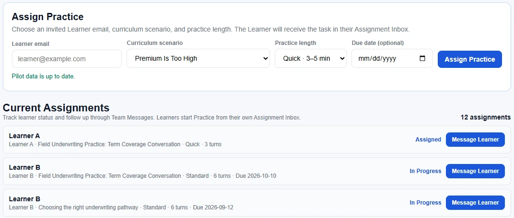

LEADERSHIP STUDIO · TOUR 5 / 7
Narration & captions ↓Assign the work. Track progress. Coach the person.
See current assignments and message a learner, so the next coaching action is clear.
1Assign Practice
2Current Assignments
3Message Learner
Real interface · fictional test dataView full-size screenshot ↗

On a phone: swipe the screenshot sideways to inspect the full interface, or open full-size.
Guided explanation · captions
Captions stay readable without sound. Speech is optional and depends on your browser.
- Managers need a clear picture of who is learning what.
- Use Assign Practice to set the next training action.
- Current Assignments shows the team's progress and task statuses.
- Message Learner helps the manager follow up and guide the trainee; the manager makes the decision.
- Next, see how the four Studios connect through the central Hub.
Choose Listen to hear the explanation.